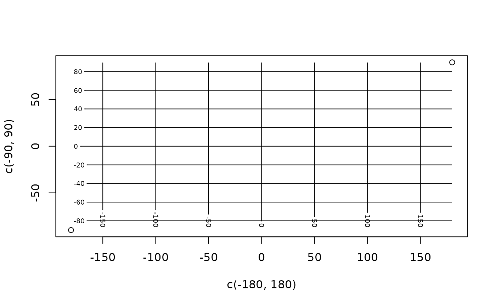
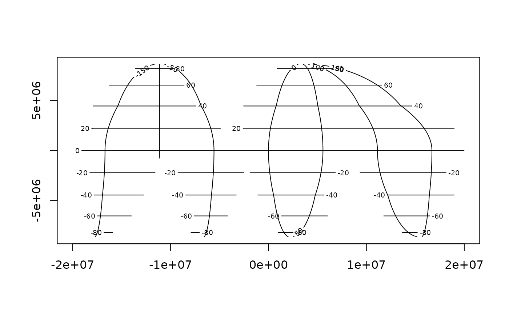
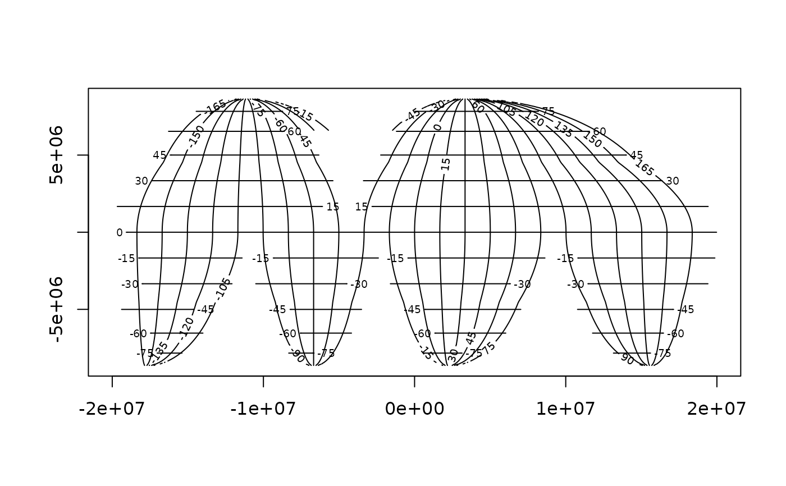

Use the coordinates of the input raster to generate coordinate rasters, these are then used in a contour plot.
lonlat( x, na.rm = FALSE, lon = FALSE, lat = FALSE, ..., plot = TRUE, add = TRUE )
| x | input raster |
|---|---|
| na.rm | logical, remove missing values from generated coordinates |
| lon | if TRUE, only longitude plotted |
| lat | if TRUE (and `lon = FALSE`) only latitude plotted |
| ... | passed to [graphics::contour()] |
| plot | logical, plot the result |
| add | logical, add to current plot or instantiate one |
RasterBrick of the longitude and latitude values, two layers
Plot is added to an existing plot by default.
